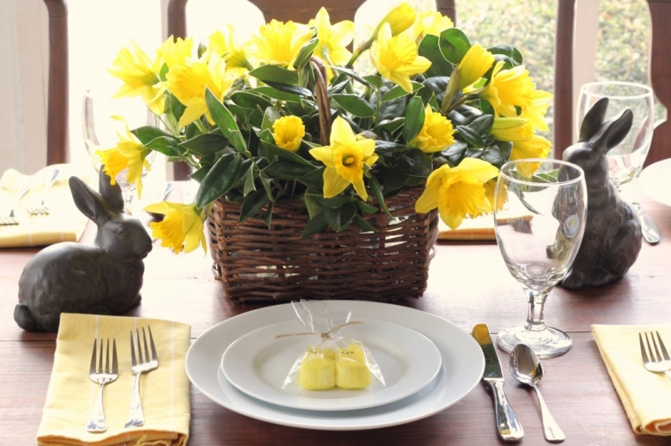

.png)
.PNG)
.PNG)
.PNG)
.PNG)
.PNG)
.JPG)
.JPG)
.PNG)
.PNG)



(last year’s Easter table on the porch)
Put on your sunglasses because today’s post is bright! 🙂 Daffodils were my favorite flower when I was a child. Perhaps it was because Mrs. Hardy, my 6th grade teacher, made us memorize and recite William Wordsworth’s poem about them, or perhaps it was because my grandmother and my mother had them growing in profusion in their yards. Whatever the reason, they were and still are a sure sign of spring, and that bright bright yellow can brighten up any space. On this very dreary-and-full-of-rain weekend, we need some of that cheery sunshine! So let’s wander through the daffodils.
This party is precious, and it is what inspired me to think about daffodils inside our homes (although it appears that they are partying outside on the porch. 🙂 )
Here is another wonderful daffodil party. This one celebrates the 10th wedding anniversary of a sweet couple. The first photo is from Ditzie Cakes, the bakery that made all the delicious goodies and styled the table. The second one is from Sugar Branch Events, the company that created the beautiful floral arrangements in the shoot, and if you click here, (and you really should 🙂 ) you can read the backstory of the couple and see all the gorgeous details on the website of the photographer, Lindsey Brooke.

And while we are looking at yummy desserts, how about one or two more servings of daffodil cupcakes?
We could serve our cupcakes on one of these sunshine-y tables.
And we can make daffodil candy cups like these from Martha Stewart (but I like the paper Melaine used on hers in the photograph above better.)
If you don’t have any daffodils blooming in your area, you could always make these cute paper ones. 🙂
But if you want to see hills of daffodils in bloom, where can you go? There are several places that are famous for them.
How about P. Allen Smith’s farm at Moss Mountain?
He even has a video about planting the thousands of bulbs growing there.
The largest planting of daffodils in North America is right here in Georgia at Gibbs Gardens. (Sorry P. Allen Smith, but with 20 million blooms, we’ve got ya beat!)
If you can’t make it to Georgia to tour the gardens in person, you can tour them in this episode of GPB Traveler.
There are over 60 varieties of daffodils planted at Gibbs Gardens. Martha Stewart has a good article about different varieties if you would like to learn about them.
If you can wait until late April, Nantucket’s Daffodil Festival is major
with a parade…
tailgate picnics,
and more. Watch this video of the hat parade…precious!
That wraps up all of our wandering in daffodils for today. And I am officially on Spring Break. 🙂 Woohoo!! Do you have plans for something fun for this weekend?
We’d love to hear about it!


.PNG)
Somehow I missed reading this post, but I usually scroll back in my RSS feed to make sure I’ve seen everything. Yellow – my favorite color and daffodils, a sure sign of spring and one of my faves! What a feast for the eyes all these pictures were, makes me hopeful we’ll be seeing some of this in New England very soon. Hope your break was a relaxing one, we aren’t out until Easter. Then, it’s just a matter of getting through that last quarter till June.
—————————————————————
I hope spring comes your way soon Paula. Your winter has been too long and too strong. Our break has not been relaxing…VERY busy with a lot of traveling, but very fun…saw soooo many beautiful places.
I wish we would split our break into 3 days now and 2 days at Easter. I could use a couple of days before Easter to get things ready then.
Summer will be here before we know it.
Kelly
I have told so many people I want to collect all the different “buttercup” (that’s what I call them) varieties! I’m tickled you posted that Martha Stewart chart and I’m going to print it and carry it with me.
I love reading people’s comments to you 🙂 They love you!!! Like I do!
————————————————————-
Phyllis, I had forgotten all about them being called buttercups. Thank you for reminding me! Glad you liked the MS chart. There are soooo many varieties of that cheery flower. Thank you for your very sweet comment! (I love reading the comments too. 🙂 )
Kelly
Hi Kelly
Since I first found your site about 3 months ago I’ve enjoy each posting and always look forward to the next, but shame on me as this is the first time that I’ve written to you. You are amazing in that you get so much accomplished and you do it so well. Kudos to you! and personally, I appreciate you and your sharing “house talk” with all of us.
Daffodils–what’s not to love. Last year a friend and I visited Daffodil Hill here in norhtern CA. How marvelous it was to see thousands and thousands of yellow and white flowers gently swaying with the soft breeze. Memorable.
The daffodils in my flower garden all bloomed about three weeks ago and now I have only the green spiky leaves left, but that is outside. Inside every spring I use my Franciscan Greenhouse dishes. Did I mention they are the Daffodil pattern. Very fun.
Enjoy your break–rest and recreate.
———————————————————–
Thank you for taking the time to leave a comment. I am so happy that you are enjoying all the posts here! Thousands and thousands of daffodils growing in mass would be soooo gorgeous. We really do need to make a trip to see Gibbs Garden where they have them planted like that here in Georgia. Your dish pattern is perfect for spring! That would be a fun pattern to use for an Easter brunch.
Please visit again. 🙂
Kelly
What an amazing display of daffodils!! Just a beautiful post. I love daffodils too, and they are reminiscent of my grandmother’s garden, where they grew by the hundreds. Thanks for a “sunny” post!
————————————————————-
Daffodils are so pretty. I am glad you liked the post, Ellen. I bet your grandmother’s garden was just beautiful with hundreds of bright yellow daffodils!
Kelly
Kelly,
Loved looking at all the daffodils. Raining here today. Pretty much has been all weekend. Lord I wish warm weather would come. I have our whole backyard bordered in daffodils that I rescued from a old farm place that was being torn down for a new sub division here in our County. I spent one weekend just digging hundreds of them. Spent the next planting them in my yard. Every year now I pray they will come back and they do. I just love looking at how beautiful they are. I didn’t get to rescue all the daffodils from that farm place but I can remember there being thousands out there and thinking about how the couple that use to live there must of loved them and now I hope they are looking down on me smiling and thanking me for saving some of their daffodils. Enjoy your Spring Break. I hope you get to do something fun and have some beautiful weather.
———————————————————-
What a wonderful story of the daffodils in your yard!!! You were soooo smart to do that, and yes, I believe they are smiling down on you and thanking you for rescuing their beautiful flowers. Wish I could find a place to rescue daffodils. We were give wheelbarrows full of daylilies that come back every summer, but I have not dug up any daffodils anywhere from around here.
Kelly
P.S. That video of the Hat parade was a hoot! Talk about Daffodil spirit! Oh Nantucket would be so lovely. Do you have the book, Nantucket Gardens and Houses, by Virgina Scott Heard? One of my, take me away books. Wonderful garden pictures.
Debra
———————————————————–
That was some daffodil spirit! But did you notice that all the adults were smiling while all the children looked sad like, “Why did my mother make me wear this?” LOL
I do have that Nantucket book, and it IS gorgeous!
Kelly
What a gorgeous post. Look at all the daffodil goodness you found Kelly!! I would so love to go to that Daffodil festival in Nantucket. Nantucket is so on my bucket list. Oh, to be P. Allen Smith and have that estate and take in all its beauty. Sigh! I just planted more daffodils and tulips last fall. Well, at least no snow on the ground today and I can see a few starting to pop up. I am so anxious to see what comes up this next month. I pray the hard winter we had didn’t damage them. I do usually buy a couple of mini daffodils in pots and place them around the house at Easter time. The small ones are so sweet. Well Kelly, I was thinking of you when watching the national weather today. Looked like storms were headed your way. It was sunny and cold here. We are to reach 60 tomorrow. Can’t believe it! Pinch me! Finally! It is husband’s birthday which we celebrated today and will again tomorrow. So many schedules brought us to two celebrations. We’re partying all weekend long… I bought yellow and green mums with peach carnations for our celebration. Next is daffodils for sure. Thanks for such an uplifting and bright post. Spring has sprung, at least on your blog for now. Smiles…
Debra
————————————————————
You are so sweet, Debra. Nantucket is on my bucket list too. We are going to have to plant some bulbs this fall. That is one thing I have neglected to do in this yard. We did have storms here this weekend, and the wind was so strong at one point, it blew a rocking chair off the front porch and into the flowerbed! Happy belated birthday wishes to your husband. Two parties! How fun! (Hope he had two cakes as well. 🙂 )
Kelly
Pretty! Daffodils give me hope that spring is almost here….although it usually snows at least once on our field of daffodils. Happy spring break!
—————————————————————
Snow on a field of daffodils…now that would be a photo opportunity! They ARE the flower of hope. My spring break is off to a great start!
Kelly
Kelly,
I love daffodils and my favorite color used to be yellow…I’ve changed on that score but yellow is the very color of spring. Trader Joe’s sells bundles of daffodils for $1.29 this time of year. Such pretty pictures. I really like P. Allen Smith and follow him on facebook…he shares some inspiring images.
I hope you’re having a nice weekend.
Karen
———————————————————–
I so wish we had a Trader Joe’s somewhere near us…2 hours is too far. P. Allen Smith does gardening (and room design) very well. Love his work. I hope your weekend was a good one!
Kelly
After reading all the comments, it seems we are of one mind! We love daffodils! After an especially cold dreary winter their cheerful color gives us hope of warmer, sunnier days. I love those cupcakes….too pretty to eat…..I tried once to make some similar and they were an epic fail. Thanks for a happy post!
———————————————————-
Oh yes, we are all of one mind – daffodil fans! They do give us hope of warm weather, don’t they Martha?! I know all about epic fail on decorative frosting..but it still TASTES good, even if it doesn’t look good. 🙂
Kelly
Daffodils are my very favorite flower — thank you for this profusion of yellow happiness! I’m chained to my computer this weekend, finishing the final edit to the sequel to Coming to Rosemont. So I needed this happy diversion! Thank you. Enjoy your break. I’ll hope for some sunshine for you!
————————————————————
Well you are more than welcome, Barbara! No fun being chained to a computer, but at least the end is in sight. 🙂 That should help you keep on going. Can’t wait to read the sequel!
Kelly
It is daffodil season here in the Pacific NW. Just picked up 3 bunches grown at local farms. Tulips will be next! Have you been or seen pictures from Mt Vernon/LaConner WA? Fields and fields of flowers!
I’m making a quilt for a friend with cancer. So I’ll be watching movies and sewing all weekend long! First movie: The Holiday. Next: Pride and Prejudice (BBC version).
————————————————————-
How fun to be able to go to a local farm for flowers! I would LOVE to see that in person. Your weekend sounds productive and relaxing all at the same time. 🙂
Kelly
Just gorgeous!! Daffodils are one of my most favorite flowers. Unfortunately it will probably still be several weeks before they make their appearance here in Ohio. Thanks for brightening up this dreary Saturday….and enjoy your Spring Break!
————————————————————–
I am glad the post could brighten your day, Jill. Spring break has been fun so far! I hope your spring weather comes soon. Your winter has been much too long!
Kelly
Oh, I love daffodils, Kelly!! I even have a board on Pinterest just for daffodil things, all sorts.
————————————————————
Well I would say you are a major daffodil lover, Barbara! I will have to check out your pinterest board. Thanks for letting us know about it.
Kelly
What an awesome post! Daffodils are the color of sunshine, and after a long & brutal winter, we Ohioan’s can surely use all the sun we can get! Love your posts & enjoy your time away from the classroom!
————————————————————
Thank you DeeDee! Daffodils are definitely spring’s first dose of sunshine. I am enjoying the week!! (And I know summer will be here before we know it too. 🙂 )
Kelly
Love all of these!!!!! daffodils are one of my favorites! the video was so cute!
————————————————————-
I loved that hat parade too, Sherry! I think there must be quite a few daffodil lovers out there.
Kelly
Hi Kelly,
Thanks for such a beautiful uplifting post. Daffodils and tulips say Spring to me too. Since we are still blanketed with a foot of snow and temps -5 to -10 C every day I REALLY need a bit of an uplift.
I’ve been buying bunches of tulips and daffodils to fill the house with spring.
Thanks again for a great post
Cath
————————————————————–
A foot of snow. 🙁 I know you are ready for spring. Yes, you go right ahead and buy all the flowers you can to at least make it spring inside your home even if it is not cooperating outside.
Hurry up spring!
Kelly
Oh, I love daffodils! Thanks for all the pictures…great ideas there! Daffodils are still several weeks away…unless you get a bunch at the grocery. Have a wonderful spring break. Sorry it’s gloomy and rainy…but it’s better than the alternative…snow…as you well know! 😉
———————————————————-
Then you can look forward to the daffodils, Donnamae. Our grocery stores have not carried many of them. I believe we are just going to have plant some next fall!
Kelly
Can you imagine living near a field of daffodils?…Oh one can dream…I love daffodils..such a happy flower…and I love them more as the deer do not love them!
Great inspiration today Kelly and love your last year’s Easter table!! Have a great weekend!
————————————————————-
Wouldn’t that be wonderful to have a field to cut them from?! I did not realize that deer do not eat them. Good to know! Thank you for the compliments, Shirley. 🙂
Kelly
Kelly,
We love daffodils around here too. I was just noticing a few blooming last weekend on our way to the lake house. My daughter and I made those same Martha Stewart daffodil favors when they were originally featured in her magazine. We always make the table favors for my Mom’s house and my Mother-in-laws house for Easter. Last year we did the Chow Mein noodles with melted butterscotch chips and mini chocolate eggs. Everyone always looks forward to what we bring and it makes my daughter so happy to get to contribute. I am afraid that the daffodils are not blooming here yet but I am thinking in about two weeks they should be. Our “Spring break” happens at Easter and I am really looking forward to some much needed time off and to seeing my nieces. Have a lovely break!
————————————————————–
Yum! I would like the haystacks (your chow mein noodle goodies) so much more than jellybeans. Great idea! Easter is late this year, so I know you will REALLY be wanting a break by then. I am enjoying my break for sure!
Kelly
I think you just made my day!! May be the real bright spot due to severe storms and rainy outlook. I loved these daffodils— my grandmothers both had them and I loved seeing them in the spring. I didn’t realize there were so many different varieties. Loved reading that poem from long ago— I’m going to go back now and look again at all of the sources. Enjoy your time off!!
————————————————————–
Hope you enjoyed all the links, Louvina. How wonderful that both of your grandmothers had daffodils in their yard. I wish I had dug up some from my grandmother to grow here. Maybe I can at least go back to the house I grew up in and ask if I might dig up a few from them. Do you think they will think I am crazy??
Kelly
Hi Kelly
I am loving all of your lovely daffodil pictures. I have been enjoying the inexpensive daffodils in our grocery store, but I fear they are gone now. It’s so fun to welcome spring with lots of daffodils and lemons. Love that yellow!
—————————————————————
I love yellow too, especially after soooo many cloudy rainy days! Our grocery stores have not had very many daffodils that I have seen. Maybe they will have more around Easter….seems like that is when we have purchased them before.
Kelly
I spotted the other day some potted daffodils at Home Depot. I think I just may head over there soon and buy a bunch. Have a nice Spring Break! Ours is officially over and I head back to work on Monday. Thanks for sharing the lovely story of the bride and groom.
———————————————————-
Boo hoo you have to go back to work. I have not been able to find any potted daffodils here, but maybe I am too late for them. Our season is so much earlier than yours. Glad you enjoyed the story of the anniversary. I thought it was very sweet. 🙂
Kelly
I started loving daffodils in the fourth grade when our teacher had us make an art project involving yellow construction paper and cupcake liners. How funny to see similar projects nearly *cough* 40 years later. 🙂 Thanks for bringing back a wonderful memory.
————————————————————-
Aw how sweet! When I taught first grade years ago, we made them every March. It is a shame that our curriculum has become so packed now that there is no time for things like that in school. I do miss it!
Kelly
How uplifting on this dreary morning to see all the beautiful daffodils. I love seeing them grow in profusion!! Since it is raining here we are off to the movies, Divergent for us today.
————————————————————
Movies are a great thing to do on such a rainy day. I hope you like Divergent. My daughter liked it, but she thought it was very different from the book.
Kelly
I LOVE daffodils, and your post today added sunshine to my day! Thanks for all the great daffodil photos and inspiration.
———————————————————–
Daffodils certainly add a touch of sunshine wherever they are. I am so glad they could brighten your day Brenda!
Kelly